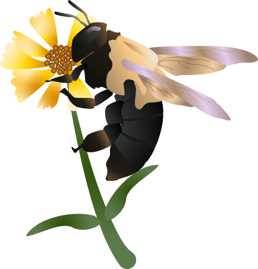

Meet the Pollinators
Monarch
(Danaus plexippus) Adult monarch butterflies possess two pairs of brilliant orange-red wings, featuring black veins and white spots along the edges. Each adult butterfly lives only about four to five weeks. Milkweed is the only plant on which monarchs will lay their eggs and the only source of food for baby caterpillars.

Sphinx Moth
(Sphingidae Sp.) Most sphinx moths are nocturnal, but some are most active at dawn and dusk, or during the day. The day-active species often mimic bees or hummingbirds. A sphinx moth tends to appear in the late afternoon and evening, and often visits night-blooming flowers.

Carpenter Bee
(Xylocopa Sp.) Somewhat resembles the bumblebee but differs in having a nonhairy abdomen and in its habit of nesting in a tunnel excavated within solid wood.
Painted Lady
(Vanessa Cardui) is an irruptive migrant, a species that occasionally migrates without regard to geography or season. Some years, when southern populations reach large numbers or weather conditions are right, painted ladies will migrate north and expand their range temporarily. These migrations sometimes occur in phenomenal numbers, filling the skies with butterflies.